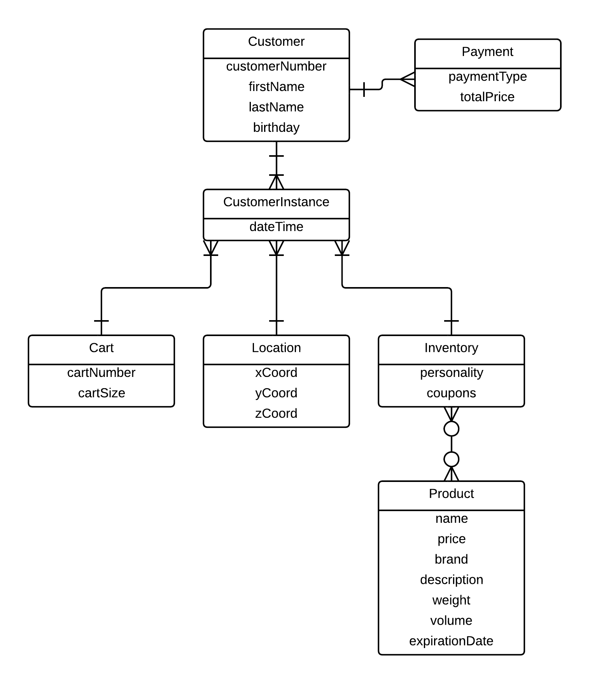
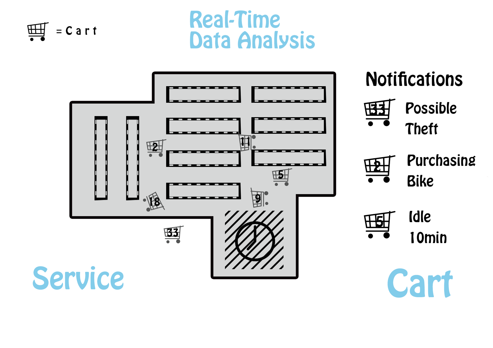
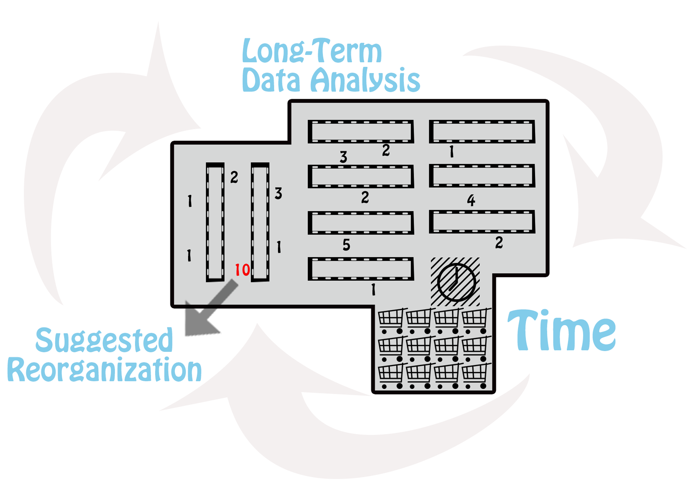
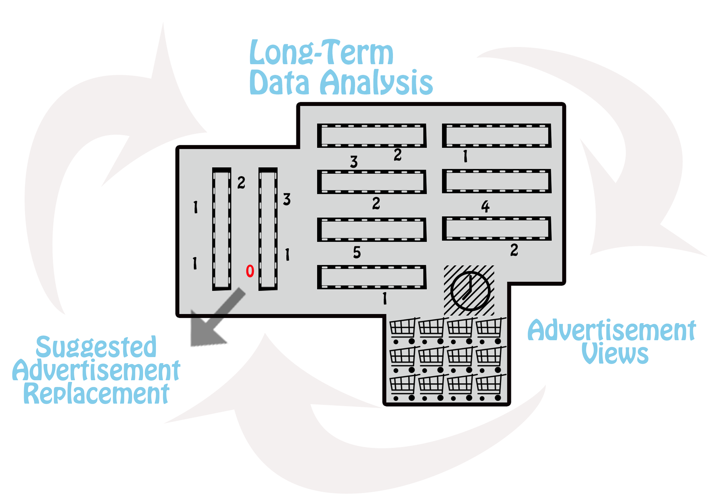
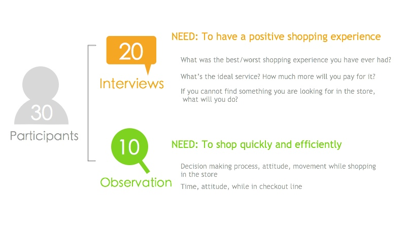
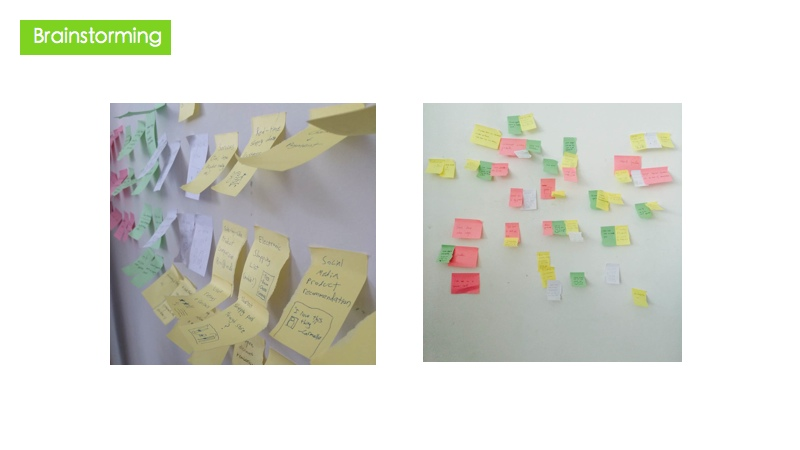
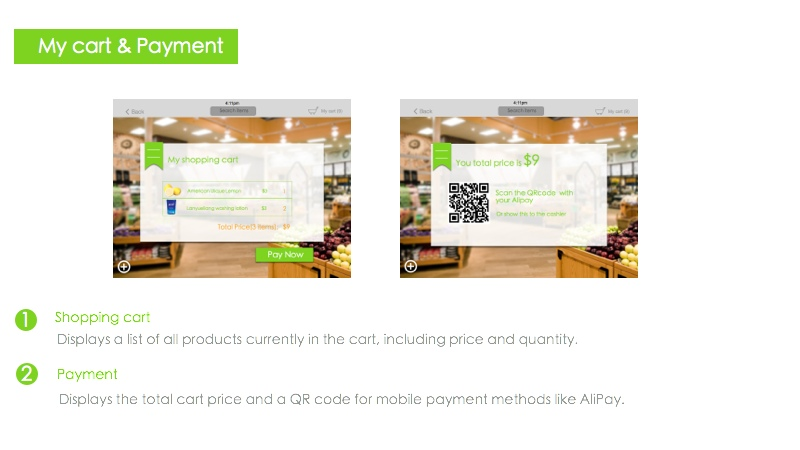
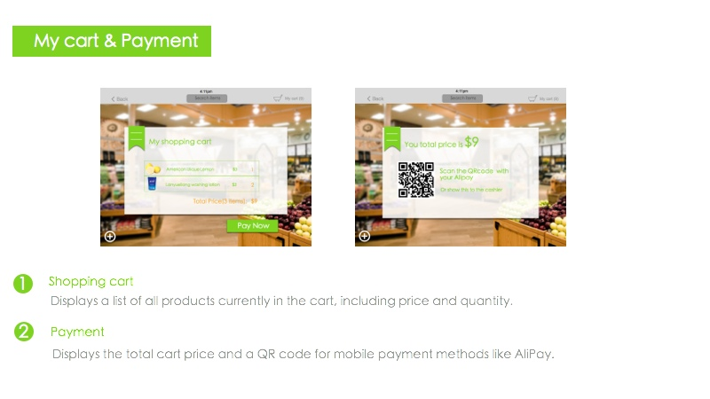
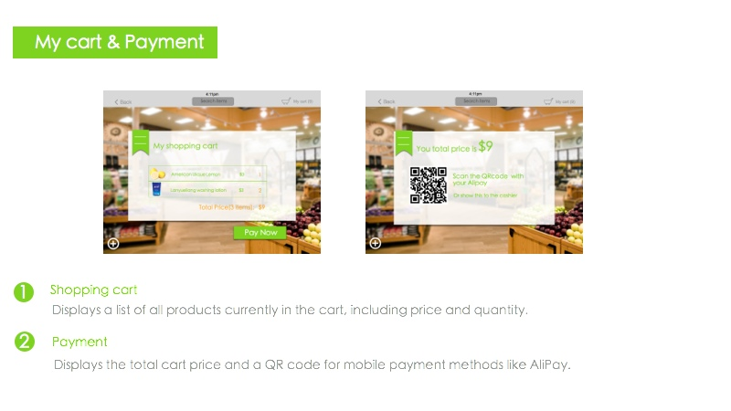

时的购物过程感到恐惧？
没人会愿意在超市浪费时间，现在的购物效率低且令人沮丧的。就花点时间想想你平时的购物。第1步，花费时间在很大而且物品排放不是很有条理的商店寻找你想买的东西。第2步，花费时间从有着不同标签，内容和信息的很多品牌的商品中选择物品。第3步，花费时间在结账台那里等待。注意到这里任何和时间相关的问题了吗？尽管这几步可能是不同的，但他们都有共同的一点：那就是购物车的使用。我们想去用它解决在超市浪费时间的问题。
为了加快和简化你的购物过程，我们建议用智能购物车：一个普通的购物车上出现了现代技术。想象现在你正在购物，但是这次你有了智能购物车。
第一件在你清单上的是香槟，但是你不知道到哪去找它。试着使用附在车上的屏幕。只要在屏幕的搜索框输入‘香槟’，然后跟随屏幕地图上在超市里指引的方向。现在你需要选择你想要什么品牌的香槟。只要使用屏幕上相似品牌的对比工具，去找到你到底要什么。最后，用附在车上的手持型条形码扫描器来扫描香槟，然后简单的把物品放在一个已经在车里的随时准备好的袋子里。一旦你已经买到了购物清单上所有想买的东西，就差付款了。等一等，超市居然没有结账台。你已经扫描和包装好了所有你购物时买的物品。你已经准备好使用你的移动设备付款，独自离开商店。
智能购物车是购物的未来。有了它，购物再也不是一个复杂又累人的事情。不需要再等待和沮丧。有了它，购物就是你随心所欲的事情。下次你去购物的时候，考虑下下智能购物车能够对你的购物带来的影响。
如果你不愿再像我们一样在超市浪费很多时间，我们很高兴有你的意见和支持。祝你购物愉快！

故事板
Blah blah blah
数据
接下来的图表是一个简化的模型，关于智能购物车系统会记录和分析的关键数据。
顾客是这个图表和系统的焦点。一个数字会代表一个顾客直到非现金的付款行为被记录。如果使用购物卡或者网上付款，具体的顾客信息可以被记录，比如姓名和生日。
顾客实例（CustomerInstance）代表了购物过程中的每个时刻，这个实例记录了在特定位置的智能购物车，这个位置有着物品的详细存货。有了这个信息，数据分析可以跟踪一个顾客的位置，移动，空闲时间，添加的物品，和他们在持续购物的过程中的购买倾向。这样的分析可以被用在确定商店问题，包括商品组织问题，顾客瓶颈，无效广告等等

接下来的图表显示了数据分析怎么去查看数据和对超市有影响。
第一张图表展示了实时数据怎么被用在对不同的用户提供立即的反馈。
比如说，如果有人偷东西，有人买大的物品，或者购物车被闲置了很久，那么顾客服务处应该接到通知。

第二张图表展示了平均的闲置购物车时间。
如果闲置时间在某个特定区域很长，那么商店可能想要确认。

第三章图表展示了在一个特别的时间表格中，在商店不同区域的平均广告查看数量。
如果广告查看数量在一个地方太低，商店可能想要用新的广告代替现在的广告。

原型


商业
- 70% 的品牌决策实在商店中做出的。
- 在商店内看到广告的客户有span.fact-highlight73%会在同一天买那个产品。
- 黄金等待时间是三分钟。在这个过程之后，顾客感觉他们的等待时间长很多。
- 自己结账相对于在结账台的时间，减少了近 40%.
- 自己结账的单位数量已经从2008年的92600人增长到了2014年的43000
我们的产品主要价值在于让购物过程更加有效率，为商店顾客创建一个更好，更简单的购物体验。我们的目标客户是Lucy，一个年轻，忙碌，有条理的顾客。我们的智能购物车会在她独立购物的过程中称为Lucy的购物伙伴。
我们会给我们的超市零售商有价值的购物数据，数据是根据实时的和长期的分析。零售商可以改进他们关于商店组织和广告的效率。
我们的收益会来自于智能购物车的出售，系统的维护还有数据分析的改进。为了让这些都实现，我们需要一些重要的合作商，广告和资源。我们重要的合作商是支付宝，用户评论提供商和家乐福超市。我们绝大多数重要的资源是技术方向的，包括iBeacon,在数字屏幕上的软件，和数据库。主要的活动包括体验活动，用来把智能购物车的接口介绍给用户，还有为屏幕生产广告视频。
这是我们的花费组成。总之，有两部分：购物车的生产和零售商的系统开发。

设计
我们花了一星期时间调查在商店购物的人数。我们在北京大学旁边的家乐福超市随机访问了20个人，并观察了10个人。

根据观察，我们构想了我们的人物角色Lucy，一个做事很有条理的女学生。

- Lucy每个月在家附近的家乐福超市购物两次
- Lucy总是使用购物车所以她不必在身上带着那些物品。
- 她在购物之前列了购物清单，但是通常在最后会买到一些她朋友推荐的其他商品。
- 当Lucy找到她想买的东西的时候，她花了很多时间比较不同品牌，同类商品的价格和质量。
在用户研究之后，我们头脑风暴出可能的产品功能，在实现的可能性和工作量之间进行权衡。最后我们决定做出一个带有数字显示屏的购物车，它能偶帮助顾客比较商品信息和自己进行结账等。

我们从早先的纸上原型，可点击的线框图，高保真的用户界面，实物模型，一直到在iPad上可运行的原型，经过了5此迭代。


 


小组
我们是智能购物车小组。我们小组由六个最棒的最创新的学生组成，他们各自有着不同的兴趣和背景。 每个小组成员有着他/她自己的擅长领域，从技术到用户体验再到商业分析。 我们的小组成员有一个来自美国，是西雅图华盛顿大学的学生，其他五个人是中国各个大学的学生。
我们一起从不同视角展现了简化购物流程。
我们小组聚集在北京，是参加一个持续集中三星期的北大产品设计课程。
Elliot
Technologist, User Analyst
Elliot is an undergraduate at the University of Washington in Seattle. He is studying Informatics and is interested in application development, data, and cutting-edge technology.
Ellen
Information Analyst

blah 1 blah 1
Kevin
Product Designer

blah 1 blah 1
YaYa
Manager, Business Analyst

blah 1 blah 1
Anthony
Technologist
blah 1 blah 1
Katy
UX Designer

blah 1 blah 1
More
Our PowerPoint presentation can be found here.